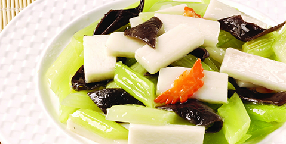
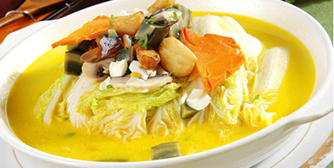
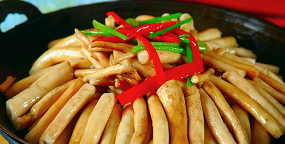
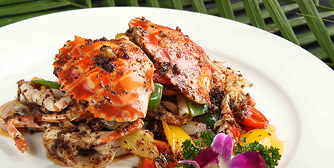

联系我们
联系方式
客户留言
招商政策
招商加盟
合作伙伴
茶油文化
茶油知识
茶油食谱
健康专题
产品中心
有机山茶油
山茶调和油
山茶衍生品
农副产品
新闻动态
公司新闻
行业动态
关于我们
公司简介
企业荣誉
生产基地
网站首页
您现在的位置: 首页 》
茶油文化
》
茶油食谱
茶油知识
茶油食谱
健康知识
茶油食谱
Camellia oil recipes

茶油杏仁木耳炒西芹
茶油杏仁木耳炒西芹
材料：西芹、木耳、红椒、杏仁、姜、大葱、大蒜、盐、沈郎乡茶油。做法：（1）烧开的热水中放入适量盐，依次放入西芹、红椒、木耳焯水...
更多>>

茶油清炒莴笋丝
茶油清炒莴笋丝
材料：莴笋丝、红椒、盐、味精、沈郎乡茶油做法：（1）将莴笋、红椒洗净，切成丝；（2）锅中热油，放入莴笋丝、少许盐、味精…
更多>>

茶油干锅茶树菇
茶油干锅茶树菇
材料：新鲜茶树菇、猪五花肉、青红椒各半根、大蒜、姜、香葱、泡红椒、酱油、糖、鸡精、料酒、沈郎乡茶油。做法：（1）茶树菇洗净；五花肉切薄片...
更多>>

茶油姜葱炒花蟹
茶油姜葱炒花蟹
材料：花蟹、葱、姜、彩椒、生粉、料酒、蚝油、盐、味精、鸡精、沈郎乡茶油。做法：（1）加入葱、姜、料酒腌制蟹块，腌制...
更多>>
<
1
2
...
6
>